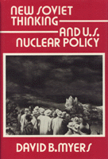

<body bgcolor="#FFFFFF" text="#000000" link="#0000FF" vlink="#CC0000" alink="#CC0000"><center><hr width="350" size="1" align="center" noshade>An examination of nuclear weapons policy options in light of recently declared changes in Soviet military strategy<hr width="350" size="1" align="center" noshade><p><a href="https://cdcshoppingcart.uchicago.edu/Cart/ChicagoBook.aspx?ISBN=9780877227106&&PRESS=temple" target="_top">Buy this book!</a> | <a href="https://cdcshoppingcart.uchicago.edu/Cart/Cart.aspx?PRESS=temple" target="_top">View Cart</a> | <a href="https://cdcshoppingcart.uchicago.edu/Cart/Cart.aspx?PRESS=temple" target="_top">Check Out</a></p><p></p></center><!--none//--><h1>New Soviet Thinking and U.S. Nuclear Policy</h1>
<h3>David B. Myers</h3>
<P>cloth 0-87722-710-1 $59.50, Oct 90, <FONT COLOR=#990033>Out of Stock Unavailable</FONT>
<BR> 304 pp
<BR>&nbsp;<br>Restricted: Please note that sales of this book are restricted to the United States of America and its dependencies, the Philippine Islands, and Canada.
</P><BLOCKQUOTE><I>"A contribution not just to the study of nuclear strategy but to international relations in general."</I>
<br>&#151<b>Douglas P. Lackey</b>, Baruch College, CUNY<I></I></BLOCKQUOTE>
<p>This book is an examination of nuclear weapons policy options in light of recent declared changes in Soviet military strategy. David B. Myers addresses the question: How should the United States respond to the fact that the Soviet Union has thousands of nuclear weapons aimed at the American homeland? He points out that even if a Soviet-American treaty cutting strategic weapons by fifty percent becomes a reality, this question will remain compelling. Given the current climate of glasnost, US. strategy now must carefully be rethought. Myers’ discussion provides an explanation of essential policy alternatives, the major arguments for each, and criteria for evaluating all proposals.
<p>In an effort to make the security options more accessible to readers, Myers draws an original analogy between four criminal correction theories and four major policy options. Nuclear deterrence strategy is compared to the theory of criminal deterrence; strategic defense, to social defense; conventional defense, to retribution; and civilian-based defense, to rehabilitation. He evaluates each policy by means of seven criteria: coherence, moral defensibility, legal defensibility, technical feasibility, affordability, adequacy vis-à-vis Soviet policy, and value for disaster avoidance.
<p>This work in applied philosophy clearly provides readers&#151specialists as well as generalists&#151with technical information, policy alternatives, and criteria to evaluate competing answers to one of the most crucial questions facing our nation.
<BR>&nbsp;<H2>About the Author(s)</H2>
<P><b>David B. Myers</b>, Professor of Philosophy at Moorhead State University, is the author of between <I>Marx and Nietzsche</I>.</P>
<BR><H2>Subject Categories</H2>
<p><A HREF="/tempress/philosophy.html" TARGET="_top">Philosophy and Ethics</a>
</p>
<p align="center"><a href="https://cdcshoppingcart.uchicago.edu/Cart/ChicagoBook.aspx?ISBN=9780877227106&&PRESS=temple" target="_top">Buy this book!</a> | <a href="https://cdcshoppingcart.uchicago.edu/Cart/Cart.aspx?PRESS=temple" target="_top">View Cart</a> | <a href="https://cdcshoppingcart.uchicago.edu/Cart/Cart.aspx?PRESS=temple" target="_top">Check Out</a></p><p><font face="Arial" size="1"><a href="copyright.html" onMouseOver="window.status='Web Copyright Policy';return true;" onMouseOut="window.status=''" title="Web Copyright Policy">&copy;</a> 2015 <a href="http://www.temple.edu" target="new" onMouseOver="window.status='Link to Temple University home page';return true;" onMouseOut="window.status=''" title="Link to Temple University home page">Temple University</a>. All Rights Reserved. http://www.temple.edu/tempress/titles/667_reg.html</font></p>